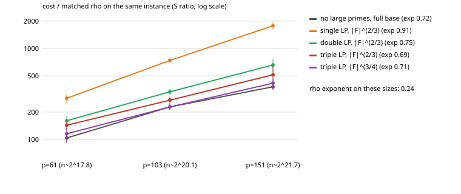

Protocol PROTOCOL.md, frozen before data, with Amendments 1 and 2 (also frozen before their data). Every run's answer checked against the planted log; 0 failures in all cells. Goal (index calculus near rho parity) not met.
| bits | T | B=0 cost / sqrt r per target | B=1 / B=0 | gain vs T=1 (B=0) |
|---|---|---|---|---|
| 18 | 1 | 1.922 | 1.278 ± 0.176 | 1.00 |
| 18 | 4 | 0.971 | 1.039 ± 0.094 | 1.98 |
| 18 | 16 | 0.615 | 0.945 ± 0.044 | 3.12 |
| 18 | 64 | 0.375 | 1.062 ± 0.028 | 5.12 |
| 20 | 1 | 1.846 | 1.119 ± 0.134 | 1.00 |
| 20 | 4 | 0.817 | 1.108 ± 0.100 | 2.26 |
| 20 | 16 | 0.535 | 1.033 ± 0.063 | 3.45 |
| 20 | 64 | 0.348 | 0.949 ± 0.039 | 5.30 |
| 22 | 1 | 1.580 | 1.314 ± 0.202 | 1.00 |
| 22 | 4 | 0.793 | 1.193 ± 0.081 | 1.99 |
| 22 | 16 | 0.502 | 1.046 ± 0.061 | 3.15 |
| 22 | 64 | 0.325 | 0.966 ± 0.051 | 4.86 |
Sharing one table across T = 64 targets cuts per-target cost 4.9-5.3x (ideal sqrt(64) = 8x). The residual collector's factor-base unknown (B = 1) costs 1.12-1.31x at T = 1 and 0.95-1.06x at T = 64: in a batch it reaches parity with multi-target rho (B = 0) and does not beat it. Comparisons are to multi-target rho at the same T, never to single-target rho.
Setting differs from the main protocol: a cubic extension field, where a subfield factor base exists (the prime-field k = 2..4 script could not be written in this session). Relations are 3-point decompositions, so quadruple large primes are not expressible in this engine. Cost is the engine's own S (field multiplications converted to additions), ratio to rho on the same instance.

| arm | p=61 | p=103 | p=151 | exponent (log2 ops on log2 n) |
|---|---|---|---|---|
| no large primes, full base | 104 ± 13 | 228 ± 16 | 379 ± 31 | 0.721 |
| single LP, |F|^(2/3) | 283 ± 30 | 739 ± 43 | 1778 ± 158 | 0.908 |
| double LP, |F|^(2/3) | 161 ± 20 | 334 ± 25 | 660 ± 111 | 0.750 |
| triple LP, |F|^(2/3) | 143 ± 22 | 270 ± 28 | 514 ± 136 | 0.687 |
| triple LP, |F|^(3/4) | 115 ± 22 | 228 ± 19 | 416 ± 62 | 0.715 |
| rho | 1 | 1 | 1 | 0.242 |
Scripts: scripts/mt.py, scripts/analyse_cubic.py, examples/klp_cubic.rs; logs in logs/.